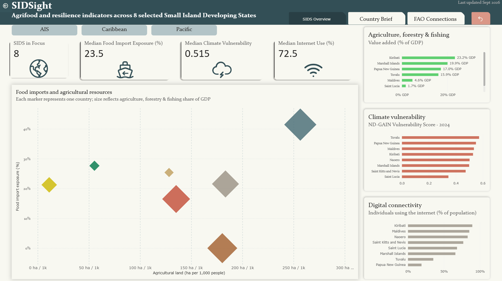

An independent exploration of agrifood, resource, digital and climate indicators across selected Small Island Developing States.
A comparative view of selected SIDS across the Pacific, Caribbean and AIS regions.

Country-level context and indicators for policy discussions. This section will be added in the next project stage.
Selected links to FAO SIDS initiatives, dialogue themes and areas of work. This section will be developed as the project progresses.